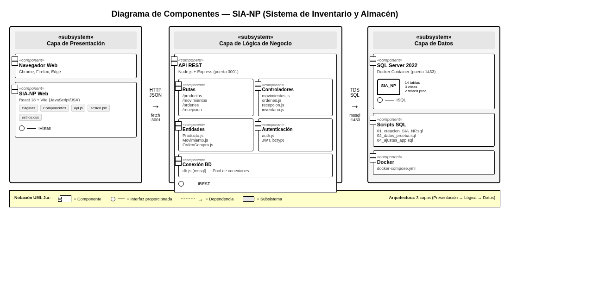

SIA-NP explicado con animaciones
Sistema de Inventario y Almacén para Neumática del Pacífico (Hermosillo, Sonora). Cada entregable de Fundamentos de Ingeniería de Software, explicado paso a paso con el mismo ejemplo real: un racor que sale del almacén y una orden de compra que lo repone.
El problema real del cliente
Fuente: ERS SIA-NP, Apéndice A (entrevistas) y Apéndice B (Excel actual: 454 registros, ubicaciones vacías, sin bitácora).
Cómo se conectan los 10 entregables
Cada paso del proceso UML (Kendall & Kendall, cap. 10) refina al anterior: los casos de uso dicen qué hace el sistema; las actividades, en qué orden y quién; las CRC, qué clases y quién colabora con quién; las secuencias, qué mensajes se envían en el tiempo; el diagrama de clases junta atributos, métodos y relaciones; el de estados sigue la vida de un objeto (la orden de compra); el diccionario lista cada dato que se guarda; y las salidas (cap. 11) diseñan lo que el sistema entrega: notas, reportes, pantallas y archivos.
RAC-0408, ubicación B-04-2): la existencia baja de 40 a 28, por debajo del mínimo de 30. Karla genera la OC-2026-0147 por 100 racores y 10 cilindros Ø32 × 100. Llega en dos entregas y Lodevar la recibe; la orden pasa de Emitida a Parcialmente recibida y luego a Recibida.
1Casos de uso y escenarios
Ocho casos de uso (CU1–CU8) describen qué hace SIA-NP para cada persona del almacén, de compras y de dirección. Cada uno tiene su escenario: una tabla con actores, precondiciones, flujo normal, flujos alternos y poscondiciones.
Qué es este entregable
Caso de uso
«Un caso de uso siempre describe tres cosas: un actor que inicia un evento, el evento que desencadena un caso de uso y el caso de uso que realiza las acciones desencadenadas por el evento.»
Muestra el sistema «desde la perspectiva del usuario»: describe qué hace el sistema sin describir cómo lo hace; se puede ver «como una secuencia de transacciones en un sistema». En SIA-NP: Ricardo (actor) tiene que surtir un pedido (evento) y CU1 Registrar Movimientos realiza las acciones.
Kendall & Kendall, cap. 10, «Modelado de casos de uso», pág. 287.
Escenario de caso de uso
«Un escenario de caso de uso (aunque técnicamente no es un diagrama). Este escenario es una articulación verbal de excepciones para el comportamiento principal descrito por el caso de uso principal.»
Tiene tres áreas (pág. 289): un encabezado con identificadores e iniciadores, los pasos realizados y un pie con precondiciones, poscondiciones y suposiciones. Además, «cada ruta a través de las diversas decisiones incluidas en el caso de uso es un escenario distinto» (pág. 292): el flujo normal es una ruta y cada alterno (4a, 8a…) es otra.
Kendall & Kendall, cap. 10, págs. 287, 289 (figura 10.7, pág. 290) y 292.
| Área del escenario (Kendall, pág. 289) | Filas de la tabla del entregable |
|---|---|
| Encabezado: identificadores e iniciadores | Nombre, Autor (Equipo Grupo S5A), Fecha (14 de septiembre de 2026), Descripción, Actores |
| Pasos realizados | Flujo Normal (numerado 1, 2, 3…) y Flujo Alternativo (4a, 7a…: la letra indica de qué paso sale) |
| Pie: condiciones | Precondiciones y Poscondiciones |
Según el libro, los escenarios sirven después para dibujar los diagramas de secuencia (pág. 290); de ellos salen también los diagramas de actividad del entregable 2.
Diagrama de casos de uso
El entregable 1 no trae un diagrama general: son 8 tablas de escenario. Este diagrama se armó con los actores que declara cada escenario (fila «Actores»). La Figura 2 de la ERS sí dibuja relaciones include, extend y generalización, pero es una imagen sin texto y el entregable no las menciona, así que aquí solo aparecen asociaciones actor–caso de uso. Haz clic en un caso de uso para ver su escenario.
El escenario de cada caso de uso, paso a paso
Elige un caso de uso. A la izquierda de la conversación habla el usuario; a la derecha responde el sistema. El panel de datos muestra lo que cambia en cada paso (en naranja, lo que cambió en el paso actual). Los botones con borde punteado lanzan los flujos alternos.
Panel de datos
Cifras de ejemplo con datos reales del cliente.
Cómo leer la notación
Incluye y extiende (las otras relaciones de comportamiento de la pág. 287) no se usan en el entregable 1.
Para la exposición
¿Por qué CU1 y CU6 son los casos críticos?
Es criterio del equipo; la ERS no los marca así. Los dos cambian la existencia del inventario, que es el objetivo central (que lo que diga el sistema sea lo que hay en el almacén). CU1 es la operación diaria y evita vender lo que no hay, el problema más grave que señaló Lodevar; CU6 liga la mercancía que llega con su orden de compra y su factura, y controla lo pendiente por recibir. Por eso son los dos que tienen diagrama de secuencia (SD2 = CU1, SD1 = CU6). CU3 y CU4 también cambian la existencia, pero por ajustes y devoluciones, no por la operación diaria.
Entregable 4, sección 1 «Selección de las secuencias».
¿Por qué dicen «RF3» si en la ERS el registro de movimientos es «RF01»?
La ERS tiene dos numeraciones incompatibles. Los entregables citan la del Apéndice C (relación numerada). La de §3.2 (tablas por usuario) y la Figura 2 es otra:
| Requerimiento | Apéndice C (la que usamos) | §3.2 de la ERS |
|---|---|---|
| Registro de movimientos | RF3 | RF01 |
| Orden de surtido y nota de salida | RF8 | RF07 |
| Lectura por código de barras | RF9 | RF08 |
| Recepción de mercancía contra OC | RF13 | RF12 |
| Sugerencias de reorden | RF14 | RF13 |
| Autenticación y permisos por rol | RF1 | RF19 |
¿Por qué en CU1 el usuario confirma (7) antes de que el sistema valide (8)?
Corrección del 9 nov 2026: antes la validación era el paso 7 y la confirmación el 8. Se invirtió para que el escenario diga lo mismo que los diagramas de secuencia (SD2 para CU1, SD1 para CU6), donde el sistema valida después de que el usuario confirma. Eso renumeró los alternos: en CU1, 7a es cancelar, 8a salida mayor a la existencia y 8b falta un campo; en CU6, 6a mercancía con defectos y 7a cantidad que excede lo solicitado.
Ojo: CU4 (devolución) conserva el orden «valida (6) y después confirma (7)»; la corrección solo tocó CU1 y CU6.
¿Cuál es la diferencia entre caso de uso y escenario?
El caso de uso es la función vista por el actor (el óvalo del diagrama). El escenario es su descripción verbal paso a paso, con las excepciones (Kendall, pág. 287); cada ruta por sus decisiones es un escenario distinto (pág. 292). CU1 tiene una ruta normal y cuatro alternas.
¿Quién es el actor principal de CU1 y de CU6?
En CU1, el Encargado de Almacén (actor principal) y el Auxiliar de Almacén; por eso el ejemplo con Ricardo es válido. En CU6, la Encargada de Compras es la principal y el Encargado de Almacén participa; SD1 empieza con la Encargada de Compras. La ERS (§2.2) da un solo actor por CU (salvo CU2, «Encargado / Auxiliar», y CU8, «Todos»); los escenarios agregan los secundarios.
¿Hay algo que el equipo sabe que aún no cuadra?
Se corrigió lo que no cuadraba: en CU1, CU4 y CU5 la precondición ya no afirma que el producto, cliente o proveedor exista (cada alterno 4a/2a/3a trata el caso de que no exista), y CU2 y CU7 ya no registran la consulta en la bitácora, porque la ERS solo exige bitácora para movimientos y cambios (RF19), no para consultas.
2. Diagramas de actividad con carriles
Un diagrama por caso de uso (CU1–CU8). Cada uno dice en qué orden pasan las cosas, quién las hace (actor o Sistema SIA-NP) y qué camino se toma en cada decisión. La ficha naranja recorre el flujo normal y cada flujo alterno.
Qué es este entregable
Según Kendall & Kendall, los diagramas de actividad «muestran la secuencia de actividades en un proceso, incluyendo las actividades secuenciales y paralelas, además de las decisiones que se toman»; por lo general se crea uno por caso de uso y puede mostrar sus distintos escenarios (p. 290).
Los carriles (swimlanes) «indican particionamiento»: muestran qué actividades realiza cada plataforma o cada grupo de usuarios, y «pueden describir tanto la lógica como la responsabilidad de una clase» (p. 291). En SIA-NP cada diagrama tiene un carril para el actor y otro para el Sistema SIA-NP; CU8 agrega un tercero, el del Administrador.
«Cada ruta a través de las diversas decisiones incluidas en el caso de uso es un escenario distinto» (p. 292), y el diagrama sirve para armar planes de prueba: «hay que evaluar cada decisión para ver si se toma la ruta correcta» (p. 294). Eso es lo que hace la ficha: evalúa cada guarda con los datos del ejemplo.
Fuente: Kendall & Kendall, cap. 10, págs. 290–294. Diagramas: scripts/actividades/definiciones.py (mismas posiciones, textos y guardas que el .drawio y las figuras del entregable 2); flujos del entregable 1, versión del 9 nov 2026.
Los 8 diagramas
Datos del ejemplo
Cómo leer la notación
Notación: Kendall & Kendall, fig. 10.8 (p. 291) y sección «Notación utilizada» del entregable 2. En la animación, las líneas que ya recorrió la ficha se engruesan; lo naranja es solo el paso actual.
Para la exposición
¿Para qué sirven los carriles y por qué el «Sistema SIA-NP» tiene el suyo?
Indican particionamiento y responsabilidad: cada acción va en el carril de quien la hace (Kendall, p. 291). Lo del carril del actor es lo que el usuario hace en pantalla; lo del carril del sistema es lo que después hacen el controlador y las entidades (en CU1: ControladorMovimientos, Producto, Kardex, BitacoraDeAuditoria). Cuando una flecha cruza de carril, hay un intercambio de datos entre actor y sistema. CU8 tiene un tercer carril, el Administrador, porque restablece la contraseña y recibe el aviso de bloqueo.
¿Por qué hay rombos sin guardas?
Son fusiones: entran varias flechas y sale una (p. 291). En CU1, después de dar de alta un producto nuevo, el flujo se une al normal en un rombo de fusión; y después de las alertas 8a y 8b, otras dos fusiones lo regresan a la captura (un ciclo). Solo los rombos de decisión llevan guardas en sus salidas.
¿Por qué en CU1 y CU6 primero se confirma y después se valida?
Así quedaron los CU al corregirlos el 9 nov 2026, para que coincidan con los diagramas de secuencia (SD2 = CU1, SD1 = CU6): el usuario confirma y el controlador valida. Por eso cambió la numeración de los alternos: CU1 7a cancelar, 8a salida mayor a la existencia, 8b falta un campo; CU6 6a defectos, 7a excedente. CU1 y CU6 son los críticos por criterio del equipo (la ERS no los marca así); cubren RF3, RF8 y RF9, y RF13, en la numeración del Apéndice C de la ERS.
¿Qué significa la barra negra de CU1?
Es una bifurcación: actualizar la existencia, registrar en el kardex y asentar en la bitácora ocurren en paralelo (paso 9 del CU). La segunda barra es la unión: espera a que terminen las tres antes de mostrar el folio (paso 10). Así nunca queda una existencia cambiada sin su kardex ni su bitácora, que es la «confiabilidad» que pidió Lodevar.
¿Cómo sirve el diagrama para probar el sistema?
Cada ruta es un escenario (p. 292) y cada decisión se prueba para ver si toma la ruta correcta (p. 294). Para CU1 salen cinco casos de prueba, uno por botón de esta página: salida de 12 pza (pasa), 50 pza (alerta 8a), documento vacío (8b), cancelar (7a) y un código que no existe (4a, con alta o cancelación).
3 · Tarjetas CRC
Entregable 3, «Tarjetas CRC y pensamiento en objetos» (2 de octubre de 2026): 14 tarjetas, una por clase candidata del SIA-NP, con sus responsabilidades, sus colaboradores, sus enunciados de pensamiento en objetos y sus propiedades. Es el puente entre los casos de uso (qué hace el sistema) y el diagrama de clases (cómo se organiza).
Qué es una tarjeta CRC
CRC representa a las clases, responsabilidades y colaboradores. Las tarjetas «se utilizan para representar las responsabilidades de las clases y las interacciones entre ellas» y se crean «con base en escenarios que describen los requerimientos del sistema». Kendall agrega dos columnas a la plantilla original: Pensamiento en objetos (enunciados en español común, en primera persona) y Propiedad (el nombre del atributo), para «aclarar el pensamiento y ayudar a pasar a la creación de diagramas de UML».
Kendall & Kendall, cap. 10, «Tarjetas CRC y pensamiento en objetos», p. 284; ejemplo de cuatro tarjetas en la figura 10.3, p. 285.
Cómo se usa en una sesión CRC
- Se buscan los sustantivos (clases) y los verbos (responsabilidades) del enunciado del problema; lluvia de ideas sin criticar.
- Se depuran las clases, se escribe cada una en su tarjeta y cada tarjeta queda con un «propietario» en el grupo.
- El grupo recorre escenarios sacados de los requerimientos: primero lo rutinario y después las excepciones (la recuperación de errores).
- Cuando se decide qué clase es responsable, su propietario levanta la tarjeta y dice: «Necesito cumplir con mi responsabilidad». La tarjeta en el aire es un objeto que puede hacer cosas; si no puede solo, pide ayuda a sus colaboradores.
- Todo se dice en primera persona («Conozco mi código»). Después, las responsabilidades se convierten en métodos y los enunciados de pensamiento en objetos, en atributos.
Pasos 1–4: p. 284–285 («Interacción durante una sesión CRC»). Paso 5: p. 286. El libro vuelve a recomendar el método CRC para «buscar clases» en la p. 308.
Las 14 tarjetas del SIA-NP
Así están en el entregable, en el mismo orden. Clic en una tarjeta para ampliarla; clic sobre la tarjeta ampliada (o «Voltear») para ver el reverso con el pensamiento en objetos y las propiedades.
Fuente: entregables/03-crc/Tarjetas_CRC_SIA-NP.pdf (réplica en scripts/docx/03_crc.js). El campo «Superclases» está vacío en las 14 tarjetas. Frente y reverso son solo una forma de mostrarlas: en el entregable las cuatro columnas van en una misma tabla (botón «Ver como en el entregable»).
Sesión CRC animada: CU1 y CU6
Las 14 tarjetas están sobre la mesa. Recorremos dos escenarios: CU1 Registrar movimientos (RF3, RF8, RF9) y CU6 Recibir mercancía contra orden de compra (RF13), con la numeración de RF del Apéndice C de la ERS. En cada paso la tarjeta que tiene la responsabilidad se levanta (en naranja) y las flechas señalan a los colaboradores que necesita. Solo se usan responsabilidades, enunciados y colaboradores que están escritos en las tarjetas.
RAC-0408 (Racor recto 1/4" NPT × 8 mm, ubicación B-04-2), captura 12 pzas con la nota de salida NS-2026-0318; la existencia baja de 40 a 28 (folio MOV-2026-01542) y queda bajo el mínimo de 30.CU6: Karla Patricia Domínguez Rivera (Encargada de Compras, actor principal de CU6; el Encargado de Almacén, Lodevar Pablovich, es actor secundario) recibe la
OC-2026-0147 del proveedor nacional de neumática (100 × RAC-0408, 10 × CIL-32100) con la factura F-A-88213: primera entrega 60 racores y 10 cilindros (Parcialmente recibida); segunda entrega 40 racores (Recibida).
Mapa de colaboración
Cada línea une dos tarjetas que colaboran. Línea continua: cada tarjeta escribe a la otra en su columna Colaboradores. Línea punteada: solo una de las dos la escribe. Pasa el ratón (o toca) una tarjeta del mapa, o una tarjeta de la rejilla de arriba, para iluminar sus colaboraciones.
De las 14 tarjetas a las 22 clases
El diagrama de clases (entregable 5) «se elaboró a partir de las tarjetas CRC»: la columna Propiedad dio los atributos, cada responsabilidad un método y cada colaborador una relación. Hay más clases que tarjetas porque algunas clases salen de dentro de una tarjeta:
| Tarjeta CRC | Clase(s) en el diagrama | Qué pasó |
|---|
Verificado contra scripts/modelo_clases.py (lista CLASES: 22 clases; NOTAS nota1–nota4) y la tabla «Correspondencia con las tarjetas CRC» del entregable 5.
Tarjeta por tarjeta: propiedad → atributo, responsabilidad → método
Atributos: scripts/modelo_clases.py. Métodos: tabla de correspondencia del entregable 5. Cinco métodos del diagrama no salen de una responsabilidad: notificarDiferencias() (de la propiedad «Diferencias» del Controlador de recepción), agregarDetalle(), cambiarCantidad() y calcularSaldoPendiente() de DetalleOrden, y actualizarGraficas() de DashboardEjecutivo (de CU7).
Cómo leer una tarjeta CRC
Las filas de la tabla no forman parejas entre columnas: el colaborador escrito en la misma fila que una responsabilidad no es necesariamente el que la ayuda. Pensamiento en objetos y Propiedad sí van en pareja (un enunciado, una propiedad).
| En la mesa y en el mapa | Significa |
|---|---|
| Tarjeta naranja levantada, con sombra | La tarjeta que tiene la responsabilidad en este paso («Necesito cumplir con mi responsabilidad»). |
| Borde naranja punteado | Colaborador al que acude la tarjeta levantada. |
| Flecha naranja | «Te pido ayuda»: de la tarjeta responsable a su colaborador (siempre uno escrito en su columna Colaboradores). |
| Tarjeta atenuada | No participa en este paso. |
| Línea continua / punteada (mapa) | Colaboración escrita en las dos tarjetas / solo en una. |
Para la exposición
¿Qué significa CRC y qué columnas agregaron?
Clase, Responsabilidades, Colaboradores. Como propone Kendall (p. 284), agregamos Pensamiento en objetos (enunciados en primera persona) y Propiedad (nombre del atributo), que luego pasaron a los atributos del diagrama de clases.
¿Por qué hay 14 tarjetas y 22 clases?
Siete clases son subclases escritas en la línea «Subclases» de una tarjeta (InterfazRegistroMovimientos e InterfazRecepcion; Entrada, Salida, Ajuste y Devolucion; DashboardEjecutivo) y DetalleOrden es una propiedad. 14 + 8 = 22. En cambio, las subclases de Usuario (roles) y de Inventario físico (tipos de conteo) no se hicieron clases: son los atributos rol y tipoConteo.
¿Por qué DetalleOrden no tiene tarjeta?
Porque es la propiedad «Detalle de productos» de la tarjeta Orden de compra («Conozco los productos solicitados»). En el diagrama se separó como clase de asociación para resolver la relación muchos a muchos entre OrdenDeCompra y Producto; hay una nota en el diagrama que lo dice. Las CRC ya se entregaron y no se cambian.
¿Por qué la Interfaz no colabora con Producto, si muestra su existencia?
Por la regla de capas: la interfaz solo habla con su controlador y el controlador habla con las entidades. Por eso los únicos colaboradores de Interfaz son los dos controladores; en la sesión, Producto le responde al Controlador de movimientos, no a la pantalla.
¿Cómo se pasó de las tarjetas al diagrama de clases?
Propiedad → atributo, responsabilidad → método (Kendall, p. 286) y colaborador → relación. Las 36 colaboraciones distintas de las tarjetas son las 36 asociaciones, agregaciones, composiciones y dependencias del diagrama; basta con que una de las dos tarjetas escriba la colaboración. Cinco métodos no salen de una responsabilidad (notificarDiferencias, agregarDetalle, cambiarCantidad, calcularSaldoPendiente, actualizarGraficas).
4 · Diagramas de secuencia
Dos secuencias: SD1 = CU6 Recibir mercancía contra orden de compra (RF13) y SD2 = CU1 Registrar movimientos (RF3, RF8, RF9). Muestran, mensaje por mensaje, cómo colaboran la interfaz, el controlador y las entidades para cambiar la existencia del inventario.
Qué es un diagrama de secuencia
Según Kendall & Kendall (cap. 10, p. 294), un diagrama de secuencia ilustra «una sucesión de interacciones entre clases o instancias de objetos a través del tiempo»; se deriva de los escenarios de casos de uso y en el diseño sirve para derivar los métodos de las clases (p. 296).
- Objetos arriba, en cajas, con la notación
objeto::Clase(p. ej.cm::ControladorMovimientos); el objeto de más a la izquierda inicia: aquí, el actor (p. 294–295, figura 10.10). - Línea de vida: la línea vertical punteada, el tiempo que existe el objeto. Activación: el rectángulo angosto sobre ella, el «foco de control» mientras el objeto está ocupado (p. 295).
- Mensajes síncronos: flecha continua con punta llena,
método(parámetros); el emisor espera hasta que el receptor termina. El retorno es la flecha punteada con el valor devuelto (p. 295). - El tiempo corre de arriba hacia abajo; en nuestras figuras además los mensajes van numerados (1, 2, 3…).
- Fragmentos (
alt,opt,loop) son marcos de UML 2 para ramas y repeticiones. Kendall no los presenta en el cap. 10 y las figuras SD1 y SD2 no usan ninguno: solo el marcosdcon el nombre. Los alternos y la repetición de los mensajes 14–20 de SD1 están descritos en el texto del entregable; aquí los verás con los botones de cada diagrama.
Fuente: Kendall & Kendall, cap. 10, «Diagramas de secuencia», pp. 294–296; reglas de capas, p. 299; capas de presentación, negocios y persistencia, p. 302. Notación del entregable: sección 1 de «SIA-NP Diagramas de Secuencia».
Los dos diagramas, animados
RAC-0408 (Racor recto 1/4" NPT × 8 mm), ve existencia 40 y ubicación B-04-2, captura una salida de 12 pzas con la nota NS-2026-0318. El controlador recibe registrarMovimiento('S', 12, 'B-04-2', 'NS-2026-0318'); la existencia baja de 40 a 28 y el folio es MOV-2026-01542.SD1 (CU6): llega la mercancía de la
OC-2026-0147 (100 racores y 10 cilindros Ø32 × 100) con la factura F-A-88213. Primera entrega: 60 racores y 10 cilindros; racores 28 → 88, cilindros 3 → 13; la orden queda Parcialmente recibida. En la segunda entrega llegan los 40 racores que faltan y queda Recibida.
La regla de capas: interfaz → controlador → entidades
Kendall (p. 299): «todas las clases de interfaz deben estar conectadas a una clase de control. De manera similar, todas las clases de entidad deben estar conectadas a una clase de control. Las clases de interfaz […] nunca se conectan de manera directa a las clases de entidad». En la p. 302 lo llama capas de presentación (interfaz), negocios (control) y persistencia (entidad).
Comprobación sobre los dos diagramas (mensajes de llamada, sin contar retornos)
El conteo se calcula aquí mismo con los mensajes redibujados de las figuras. Los mensajes entre entidades (p. ej. ent::Entrada → prod::Producto) no los prohíbe la regla del libro: la regla solo prohíbe interfaz → entidad.
Cómo leer la notación
Para la exposición
¿Por qué SD1 es CU6 y SD2 es CU1, y por qué esos dos?
El orden del entregable pone primero la recepción: SD1 = CU6 Recibir mercancía contra OC (RF13) y SD2 = CU1 Registrar movimientos (RF3, RF8, RF9), con la numeración de RF del Apéndice C de la ERS. Son los dos casos que cambian la existencia en la operación diaria: CU1 evita vender lo que no hay (el problema que señaló Lodevar) y CU6 liga lo que llega con su OC y su factura. Que sean «críticos» es criterio del equipo; la ERS no los marca así.
¿Por qué la interfaz no le habla directo a Producto?
Por la regla de Kendall (p. 299): la interfaz solo habla con su controlador y el controlador con las entidades. En SD2 la interfaz pide buscarProducto(codigo) a cm::ControladorMovimientos, y es el controlador quien llama a obtenerProducto(codigo). En ninguno de los dos diagramas hay una flecha interfaz → entidad.
¿Qué pasa si Ricardo pide 50 racores y solo hay 40?
Es el alterno 8a de CU1: el mensaje 13 regresa false, no se crea la salida (14 a 21) y la interfaz muestra una alerta con mostrarMensaje(). La existencia sigue en 40. Los otros alternos: 7a cancelar (no se envía el 8), 8b falta un campo (validarCampos() = false) y 4a producto inexistente (el 4 regresa vacío).
En SD1, ¿cómo se reciben dos productos si solo hay un ent::Entrada?
Los mensajes 14 a 20 se repiten por cada partida recibida (lo dice el texto del entregable). La figura no dibuja un fragmento loop; en la animación verás la segunda vuelta para los 10 cilindros. Al final, actualizarEstado(diferencias) deja la OC en «Parcialmente recibida» (faltan 40 racores) o en «Recibida», que es el enlace con el diagrama de estados (06).
¿De dónde salen los métodos de los mensajes?
De las responsabilidades de las tarjetas CRC y pasan tal cual al diagrama de clases (05): p. ej. Producto.verificarExistencia(cantidad): Boolean, Ubicacion.validarUbicacion(clave): Boolean, Recepcion.solicitarAutorizacion(). Kendall (p. 296): en el diseño, «las interacciones de las clases se traducen en métodos de clase». Ojo, detalle conocido: validarUbicacion(clave) recibe «clave» aunque los mensajes anteriores pasan ubicacion; es el mismo dato (la clave de la ubicación, p. ej. B-04-2).
5 · Diagrama de clases
22 clases en tres capas (interfaz, control y entidad), con sus atributos, sus métodos y 44 relaciones. Es el plano estático del SIA-NP: lo que cada clase sabe y lo que sabe hacer.
Qué es este entregable
Según Kendall & Kendall, «los diagramas de clases muestran las características estáticas del sistema y no representan ningún procesamiento en especial»; también muestran la naturaleza de las relaciones entre las clases (pág. 297). Cada clase es un rectángulo con su nombre, sus atributos (lo que la clase conoce) y sus métodos (lo que sabe hacer). Los atributos suelen ser privados (-) y los métodos públicos (+) (págs. 297–298).
En el SIA-NP el diagrama se armó a partir de las tarjetas CRC y de las secuencias SD1 (CU6) y SD2 (CU1): la columna de propiedades de cada tarjeta dio los atributos, cada responsabilidad dio un método y cada colaborador dio una relación.
Fuente: Kendall & Kendall, cap. 10, págs. 297–299; entregable 5, «Introducción».
Tipos de clases (Kendall, pág. 299)
El libro divide las clases en cuatro categorías: de entidad, de interfaz (o de límite), abstracta y de control. Y fija la regla: «todas las clases de interfaz deben estar conectadas a una clase de control […] Las clases de interfaz, a diferencia de las otras dos, nunca se conectan de manera directa a las clases de entidad» (pág. 299). En la pág. 302 las agrupa en tres capas: presentación (interfaz), negocios (control) y persistencia (entidad).
InterfazInterfazRegistroMovimientosInterfazRecepcion
ControladorMovimientos (CU1)ControladorRecepcion (CU6)
UsuarioProductoUbicacionMovimientoEntradaSalidaAjusteDevolucionKardexInventarioFisicoProveedorOrdenDeCompraDetalleOrdenRecepcionReporteDashboardEjecutivoBitacoraDeAuditoria
Movimiento se instancia como Entrada, Salida, Ajuste o Devolucion.
El diagrama: las 5 figuras del entregable
Elige una figura. Haz clic en cualquier clase para abrir su ficha: atributos, métodos (con la responsabilidad CRC de la que sale cada uno), relaciones, tarjeta CRC de origen y casos de uso. Sus relaciones se resaltan en el diagrama.
Explorador de clases
Haz clic en una clase del diagrama (o en su nombre bajo el diagrama).
En las figuras 2 a 5, las clases que solo llevan su nombre (rectángulo gris sin compartimentos) son de otra vista; también se pueden explorar.
Redibujado en SVG con la geometría de cada página de Diagrama_de_Clases_SIA-NP.drawio; clases, atributos, métodos y relaciones de scripts/modelo_clases.py.
Animación 1 · Cómo se construye el diagrama
Primero las tres capas, luego el contenido de las clases y al final las relaciones, un tipo de notación a la vez.
Animación 2 · Un objeto vivo
Una clase es el molde; un objeto es una instancia con valores concretos. Aquí se ven las instancias del ejemplo (notación objeto:Clase, subrayada) y cómo sus atributos se llenan mensaje a mensaje, según las secuencias SD2 (CU1) y SD1 (CU6). Cada paso dice qué relación del diagrama de clases se recorre.
RAC-0408 (ubicación B-04-2: pasillo B, anaquel 4, nivel 2) y saca 12 piezas con la nota de salida NS-2026-0318: la existencia baja de 40 a 28 y el folio es MOV-2026-01542. Después, Karla Patricia Domínguez (Encargada de Compras, actor principal de CU6; Lodevar participa como actor secundario) recibe la OC-2026-0147 (100 racores y 10 cilindros CIL-32100) con la factura F-A-88213, en dos entregas.
La regla de capas
La interfaz solo habla con su controlador; el controlador habla con las entidades. Nunca interfaz → entidad (Kendall, pág. 299).
Herencia y clase de asociación
Cómo leer la notación
Notación del entregable («Notación utilizada») y de Kendall & Kendall: asociaciones y multiplicidad (pág. 304), clase de asociación (pág. 305), agregación y composición (págs. 305–306), generalización (pág. 306), clase abstracta en cursiva (pág. 299).
Para la exposición
¿Qué métodos no salen de una responsabilidad de las tarjetas CRC?
El entregable lista cinco:
| Clase | Método | De dónde sale |
|---|---|---|
| ControladorRecepcion | notificarDiferencias() | De la propiedad «Conozco las diferencias encontradas» (Diferencias) de la tarjeta Controlador de recepción. |
| DetalleOrden | agregarDetalle(), cambiarCantidad() | De la responsabilidad «Agregar productos y cantidades» de la tarjeta Orden de compra (DetalleOrden no tiene tarjeta). |
| DetalleOrden | calcularSaldoPendiente() | De la propiedad «Sé si quedó saldo pendiente» de la tarjeta Recepción: cantidadSolicitada − cantidadRecibida por producto. |
| DashboardEjecutivo | actualizarGraficas() | La tarjeta Reporte solo lo menciona como subclase; sale de CU7 Visualizar Dashboard de KPIs. |
Aparte, cancelarOrden() y cerrarOrden() son decisión de modelado (estados Cancelada y Cerrada), y otros ocho métodos salen de los mensajes de SD1/SD2 (p. ej. actualizarExistencia(), validarUbicacion(), escanearCodigo()).
¿Por qué DetalleOrden no tiene tarjeta CRC?
Porque es la propiedad «Detalle de productos» de la tarjeta Orden de compra. OrdenDeCompra–Producto es de muchos a muchos (0..* — 1..*): una orden pide varios productos y un producto está en varias órdenes. Como en el ejemplo Estudiante–Curso–Seccion del libro (pág. 305), se resuelve con una clase de asociación unida con línea punteada, que guarda cantidadSolicitada, cantidadRecibida y costoUnitario. Lo dice la nota del diagrama.
¿Por qué la interfaz no se conecta con Producto si la pantalla muestra la existencia?
Por la regla de Kendall (pág. 299): la interfaz solo habla con su clase de control. InterfazRegistroMovimientos envía la solicitud a ControladorMovimientos (asociación 1–1), y él consulta a Producto (dependencia «coordina»). En el diagrama no hay ninguna línea de una clase «interfaz» a una de entidad.
¿Por qué Movimiento está en cursiva y sus subclases están vacías?
Movimiento es abstracta: nunca se crea un «movimiento» a secas, sino una Entrada, Salida, Ajuste o Devolucion. Las subclases heredan todos sus atributos y métodos, así que no repiten nada; el tipo queda también en tipoMovimiento: char{E,S,A,D}. Lo mismo pasa con Reporte → DashboardEjecutivo (que sí agrega periodoAnalisis y actualizarGraficas()).
¿Cuál es la diferencia entre el diamante vacío y el relleno?
Diamante vacío = agregación («tiene un»): Ubicacion contiene Producto (el producto existe aunque se cambie su ubicación). Diamante relleno = composición, todo y sus partes con responsabilidad sobre ellas: Kardex consiste de Movimiento. Las subclases de las tarjetas Usuario (roles) e Inventario físico (cíclico/completo) no se dibujan como herencia, sino con los atributos rol y tipoConteo (notas del diagrama). Los estados de la orden usan los nombres de CU5/CU6 (Pendiente, Emitida, Parcialmente recibida, Recibida) en lugar de Abierta/Parcial del diccionario de datos de la ERS.
6 · Diagrama de estados de OrdenDeCompra
Sigue la vida de un solo objeto: la orden de compra. Se crea como borrador, se emite al proveedor, se recibe por partes o completa y al final se cierra o se cancela.
Qué es este entregable
Según Kendall y Kendall (cap. 10, pp. 309–311), el diagrama de estados, o de transiciones de estado, es otra herramienta para determinar los métodos de las clases. Se dibuja para una sola clase y muestra los distintos estados por los que pasa un objeto: por lo general los objetos se crean, pasan por cambios y se eliminan.
- Estado (p. 309)
- La condición de un objeto en un momento específico. La definen los valores de sus atributos; a veces hay un atributo que lo indica directamente (el libro pone de ejemplo «Estado del pedido»). En
OrdenDeCompraese atributo es-estado: String{Pendiente, Emitida, Parcialmente recibida, Recibida, Cerrada, Cancelada}. Su nombre empieza cada palabra con mayúscula. Se dibuja como rectángulo con esquinas redondeadas. - Evento y transición (pp. 309 y 311)
- Un evento es algo que ocurre en un tiempo y lugar específicos; provoca el cambio de estado y se dice que la transición se «dispara». Los eventos se nombran en pasado porque ya ocurrieron: «se creó la orden», «se recibió mercancía».
- Condición de guardia o guarda (p. 309)
- Algo que se evalúa como verdadero o falso y se escribe entre corchetes junto al evento:
[total > 0],[calcularSaldoPendiente() = 0]. Si es falsa, la transición no se dispara. - Acción (p. 309)
- El libro habla de las acciones de entrada y de salida: lo que el objeto debe hacer cada vez que entra o sale de un estado. En el entregable se escriben dentro del estado como
entry / …ydo / …, y la acción de una transición va después de la diagonal: la etiqueta completa queda evento [guarda] / acción. - Autotransición
- Transición que sale de un estado y vuelve a entrar al mismo (T7 en Parcialmente recibida). Como el objeto sale y vuelve a entrar, su
entryse ejecuta otra vez. El libro no usa el término; el entregable la explica en su nota 6. - Inicio y fin (p. 311)
- Círculo relleno para el inicio y círculos concéntricos con el centro relleno para el fin, como en el diagrama de actividad.
¿Por qué OrdenDeCompra? El libro dice que no hay que hacer diagramas de estados para todas las clases, sino cuando una clase tiene un ciclo de vida complejo, actualiza sus atributos de varias formas o su comportamiento depende de lo que ocurrió antes (p. 311). La orden cumple: lo que se puede hacer con ella depende de si ya se emitió o de si ya se recibió parte de la mercancía. Sus cambios los provocan CU5 Generar orden de compra y CU6 Recibir mercancía contra orden de compra (uno de los dos CU críticos).
Fuente: Diagrama_de_Estados_SIA-NP (secciones 1 y 2) y Kendall & Kendall, cap. 10, pp. 309–311.
El diagrama, animado
Elige un recorrido. La ficha naranja es el objeto oc::OrdenDeCompra; en cada paso se resalta la flecha que se dispara y a la derecha ves cómo cambian sus atributos.
RAC-0408 y la existencia bajó de 40 a 28, debajo del mínimo de 30. Karla (Encargada de Compras) genera la OC-2026-0147 al proveedor nacional de neumática (lead time 7 días): 100 × RAC-0408 (racor recto 1/4" NPT × 8 mm) y 10 × CIL-32100 (cilindro neumático Ø32 × 100 mm). Llega con la factura F-A-88213: 1.ª entrega 60 racores y 10 cilindros; 2.ª entrega 40 racores. Karla la recibe en CU6 (actor principal; Lodevar participa como Encargado de Almacén).
Los estados y las transiciones
| Estado | Descripción (Tabla 1 del entregable) | Actividades |
|---|---|---|
| Pendiente | La Encargada de Compras creó la orden y está capturando los productos. Es un borrador sin folio definitivo (CU5, flujo alternativo 7a). | entry / guardarBorrador()do / agregarProducto(producto, cantidad) |
| Emitida | La orden se confirmó con folio consecutivo y se envió al proveedor. Espera la llegada de la mercancía (CU5, paso 8). | entry / generarDocumento() |
| Parcialmente recibida | Se registró al menos una recepción, pero algún producto todavía tiene saldo pendiente. La orden sigue abierta (CU6, flujo alternativo 4a). | entry / actualizarEstado(diferencias) |
| Recibida | Se recibió la cantidad solicitada de todos los productos: el saldo pendiente es cero (CU6, paso 9). | entry / actualizarEstado(diferencias) |
| Cerrada | La Encargada de Compras dio por terminada la orden. Ya no admite recepciones; solo se consulta. | — |
| Cancelada | La orden se anuló antes de recibir mercancía, desde Pendiente o desde Emitida. | — |
| # | Origen | Evento [guarda] / acción | Destino | CU / RF |
|---|---|---|---|---|
| T1 | Inicio | se creó la orden / crearOrden() | Pendiente | CU5, RF12 |
| T2 | Pendiente | se confirmó la emisión [total > 0] / emitirOrden() | Emitida | CU5 (pasos 7–8), RF12 |
| T3 | Pendiente | se canceló la orden / cancelarOrden() | Cancelada | CU5, RF12 |
| T4 | Emitida | se canceló la orden / cancelarOrden() | Cancelada | RF12 sin CU |
| T5 | Emitida | se recibió mercancía [calcularSaldoPendiente() > 0] / compararCantidades(cantidades) | Parcialmente recibida | CU6 (4a, 9), RF13 |
| T6 | Emitida | se recibió mercancía [calcularSaldoPendiente() = 0] / compararCantidades(cantidades) | Recibida | CU6 (paso 9), RF13 |
| T7 | Parcialmente recibida | se recibió mercancía [calcularSaldoPendiente() > 0] / compararCantidades(cantidades) (autotransición) | Parcialmente recibida | CU6 (4a), RF13 |
| T8 | Parcialmente recibida | se recibió mercancía [calcularSaldoPendiente() = 0] / compararCantidades(cantidades) | Recibida | CU6 (paso 9), RF13 |
| T9 | Recibida | se cerró la orden / cerrarOrden() | Cerrada | RF12 sin CU |
| T10 | Cerrada | (fin del ciclo de vida) | Final | — |
| T11 | Cancelada | (fin del ciclo de vida) | Final | — |
Tablas 1 y 2 del entregable (scripts/docx/06_estados.js). RF con la numeración del Apéndice C de la ERS: RF12 Generación de órdenes de compra, RF13 Recepción de mercancía contra OC. La nota 6 del entregable dice que T3, T4 y T9 no tienen CU propio, aunque la Tabla 2 relaciona T3 con CU5.
Simulador: tú disparas los eventos
Pulsa un evento. La ficha solo se mueve si desde el estado actual sale una transición con ese evento y su guarda es verdadera. Prueba, por ejemplo, a recibir mercancía en una orden Pendiente o a emitir una orden sin productos.
El simulador aplica las reglas del diagrama. El rechazo de un excedente viene de CU6 alterno 7a (el sistema pide autorización); aquí simplemente no se registra.
Cómo leer la notación
entry (al entrar) y do (mientras está ahí).entry se ejecuta de nuevo.Para la exposición
¿Por qué hicieron el diagrama de estados de OrdenDeCompra y no de otra clase?
Porque es la clase con ciclo de vida más claro y su comportamiento depende de lo que pasó antes (criterios del libro, p. 311): una orden Pendiente no se puede recibir, una Recibida no se puede cancelar. Además tiene un atributo que dice su estado (estado) y la cambian dos CU, CU5 y CU6 (crítico).
¿Qué caso de uso dispara cada transición?
CU5 (Karla): T1 crear, T2 emitir (pasos 7–8). CU6 (Karla): T5, T6, T7 y T8, todas con el evento «se recibió mercancía»; la guarda calcularSaldoPendiente() de DetalleOrden decide si queda Parcialmente recibida o Recibida (paso 9 y alterno 4a). T4 (cancelar una orden Emitida) y T9 (cerrar) no tienen CU propio: se incluyeron porque cancelarOrden(), cerrarOrden() y los valores Cancelada y Cerrada ya existen en la clase. La Tabla 2 relaciona T3 con CU5, aunque la nota del entregable dice que las cancelaciones no tienen CU propio.
¿Qué diferencia hay entre la guarda y la acción en «se recibió mercancía [calcularSaldoPendiente() > 0] / compararCantidades(cantidades)»?
El evento es lo que ocurrió (llegó mercancía); la guarda, entre corchetes, es la condición verdadero/falso que decide si esa flecha se dispara; la acción, después de la diagonal, es el método que se ejecuta al dispararse. Con la 1.ª entrega (60 de 100 racores) el saldo es 40 > 0, así que se dispara T5 y no T6.
¿Para qué sirve la autotransición T7 si la orden se queda en el mismo estado?
Porque la orden sale y vuelve a entrar: se ejecuta otra vez entry / actualizarEstado(diferencias) y la orden refleja el nuevo saldo pendiente, como pide la poscondición de CU6. Ej.: tras 60 racores llegan otros 20; el saldo baja de 40 a 20, pero sigue > 0.
¿Esos estados son los de la ERS?
No exactamente: el diccionario de datos de la ERS (§4.1, ORDEN_COMPRA.estatus) usa Abierta / Parcial / Cerrada / Cancelada. Los seis estados del diagrama son una propuesta del equipo, tomada de los CU5 y CU6 («Emitida», «Pendiente» en 7a, «Recibida» o «Parcialmente recibida» en el paso 9) y del atributo estado del diagrama de clases.
(Solo si preguntan) ¿Por qué no está hecho en StarUML?
La consigna pedía StarUML, pero se entregó como imagen PNG generada por un script de Python (scripts/estados/diagrama_estados.py, que también genera un .drawio editable), porque no se contaba con la herramienta de diagramado. La notación es la del libro: estados redondeados, evento [guarda] / acción, inicio y fin.
7 · Diccionario de datos
La lista de todo lo que el sistema tiene que guardar, dato por dato: cómo se llama, qué significa, de qué tipo es, cuánto mide y a qué entidad pertenece.
Qué es este entregable
Es una tabla con seis columnas: Núm. consecutivo, Nombre del dato, Descripción del dato, Tipo de dato, Tamaño del dato y Entidad. Tiene 114 datos de 14 tablas: son los campos de la base de datos en SQL Server que se hizo en el Taller de Base de Datos (Parte I). Los tipos, tamaños y llaves se extrajeron del catálogo de SQL Server, así que coinciden con la base creada. Cada tabla corresponde a una clase entidad del diagrama de clases (sección 5).
- ¿Por qué no aparecen las clases de interfaz y control?
- Sus atributos (
campoCodigo,ordenActual…) son datos temporales de pantalla; no se guardan. Solo hay tablas para las clases entidad. - ¿Y Entrada, Salida, Ajuste y Devolución?
- No tienen filas propias: son tipos de
Movimientoy se distinguen con el campotipode la tablaMOVIMIENTO. - Llave primaria y llave foránea
- La primera identifica un registro (
PRODUCTO.id_producto); la segunda lo liga con otra tabla (MOVIMIENTO.id_productoapunta aPRODUCTO).
Explora el diccionario por entidad
Sigue un dato en el ejemplo
Ricardo surte 12 racores y después llega la orden de compra de Karla. Mira qué datos se tocan en cada paso.
RAC-0408 (existencia 40 → 28, punto de reorden 30) y recepción de la OC-2026-0147 en dos entregas.
Cómo leer la tabla
- VARCHAR(n): texto de hasta n caracteres. CHAR(n): texto de longitud fija (
rol,tipoMovimiento). - DECIMAL(10,2): hasta 10 dígitos, 2 decimales. Las cantidades son decimales porque la manguera se vende por metro.
- INT, BIGINT, SMALLINT, TINYINT: enteros. DATE y DATETIME2: fecha, y fecha con hora. BIT: verdadero o falso.
Para la exposición
- ¿De dónde salieron los datos?
- De la base de datos SQL Server del Taller de Base de Datos, que a su vez parte del diagrama de clases y de lo que pidieron los usuarios: ubicación e imagen (Ricardo), kardex y bitácora (Lodevar), lead time y clasificación del proveedor (Karla), valor del inventario (Paulina).
- ¿Por qué la existencia es DECIMAL y no INT?
- Hay productos que se venden por metro, como la manguera.
- ¿Por qué los campos no se llaman igual que los atributos del diagrama de clases?
- En la base las llaves son numéricas y autogeneradas (
id_producto) y el código que se escanea y el folio son campos aparte; además hay tablas de catálogo (ROL,FAMILIA) y una tabla puente (PRODUCTO_PROVEEDOR) que resuelven relaciones del diagrama. - ¿Cómo se sabe que son datos reales?
- Tipos, tamaños y llaves se extrajeron de
sys.columnsde SQL Server después de ejecutar el script de creación.
8 · Diseño de salidas del sistema
Cada cosa que el sistema entrega —una nota impresa, una pantalla, un archivo— y cómo se decide en qué tecnología sacarla, respondiendo las diez preguntas del libro.
Qué es este entregable
Una salida es la información que el sistema da a sus usuarios o a terceros. Kendall y Kendall (cap. 11, pp. 329–357) recuerdan que la salida suele ser lo único que muchos usuarios conocen del sistema, así que de ella depende buena parte del juicio sobre su utilidad. El entregable diseña las 10 salidas del SIA-NP: para cada una se dan sus documentos fuente, una maqueta, su tipo y tecnología, y las 10 preguntas del libro respondidas para elegir cómo sacarla.
- Seis objetivos del diseño de salida (pp. 329–330)
- Servir al propósito · ajustarse al usuario · cantidad adecuada · estar donde se necesita · a tiempo · elegir el método correcto.
- Tipos de salida
- Externa (sale de la empresa: nota al cliente, OC al proveedor) vs interna (se queda dentro); estática (impresa) vs dinámica (pantalla que el usuario cambia en vivo).
Explora las 10 salidas
Las 10 preguntas para elegir la tecnología
El libro (pp. 336–339) propone diez preguntas que se mantienen constantes aunque la tecnología cambie. Reprodúcelas aplicadas a la nota de salida (S1): cada paso resalta la pregunta y su respuesta.
RAC-0408 y el sistema imprime la nota de salida NS-2026-0318 para el cliente.
Cómo leer el entregable
- Documento fuente: de dónde salen los datos de la salida (un pedido, el catálogo, los movimientos…). No se inventa nada: cada dato ya existe en una clase entidad (sección 5).
- Tipo: externa / interna y estática / dinámica, según Kendall.
- Tecnología: impresora, pantalla (PC o móvil), PDF por correo o archivo Excel/CSV. El SIA-NP no usa audio ni microformas porque no los pide el almacén.
- RF: requerimiento del Apéndice C de la ERS que origina la salida.
Para la exposición
- ¿Por qué la nota de salida es impresa y el kardex es pantalla?
- La nota es salida externa: el cliente se la lleva como comprobante, necesita papel con folio y firma. El kardex es interno y dinámico: se consulta en vivo y cambia con cada movimiento; imprimirlo no aporta.
- ¿De dónde salen las 10 preguntas?
- De la sección “Factores a considerar al elegir la tecnología de salida” de Kendall y Kendall (pp. 336–339): quién, cuántos, dónde, propósito, velocidad, frecuencia, cuánto se guarda, regulaciones, costos y requerimientos ambientales.
- ¿El dashboard no es lo mismo que el entregable 7?
- No. El diccionario (7) lista los datos que se guardan; aquí el dashboard es una salida: cómo se presentan esos datos a la dirección (tablero de control, pp. 346), cuidando no sesgar las gráficas (pp. 340).
- ¿Por qué el CFDI aparece como “2.ª fase”?
- La exportación a Excel/CSV (S10) sí entra en esta versión; el timbrado CFDI 4.0 lo hace un PAC externo más adelante, como dice la ERS (§2.5).
9 · Diseño de interfaces de entrada
Las pantallas de captura del sistema, dato por dato: qué campos tiene cada una, qué valida y quién la usa. Si el entregable 8 fue lo que el sistema entrega, este es lo que el sistema recibe.
Qué es este entregable
El diseño de las 10 interfaces de entrada del SIA-NP según el capítulo 12 de Kendall y Kendall, «Diseño de una entrada eficaz». Incluye una tabla de relación (Id, descripción, requerimientos, validaciones y usuarios) y la maqueta de cada pantalla, todas con el mismo diseño: barra con logo, campos agrupados en secciones, marca de obligatorio y la validación debajo de cada campo.
- ¿Por qué la captura importa tanto?
- Es la principal fuente de errores: si el dato entra mal, la existencia, el kardex y los reportes quedan mal. Por eso cada campo valida (cantidad > 0, salida ≤ existencia, RFC de 12–13, etc.).
- Seis objetivos del libro
- Efectividad · precisión · facilidad de uso · consistencia · sencillez · atractivo.
- Convenciones de la maqueta
- * obligatorio ✓ validación campo de solo lectura = dato que el sistema calcula ▐█▌ lector de código de barras (RF9)
Relación de interfaces
Haz clic en una fila (o en una pestaña abajo) para ver su maqueta.
Explora cada pantalla
Mira validarse la captura
Ricardo registra la salida de 12 racores en la pantalla IE-002. Sigue cómo cada campo se valida antes de guardar.
RAC-0408 con la nota NS-2026-0318; existencia 40 → 28.
Para la exposición
- ¿De dónde salen las validaciones?
- De las restricciones CHECK de la base de datos del Taller (cantidad > 0, máximo ≥ mínimo, RFC 12–13, lead time 0–180…) y de las reglas de los casos de uso (salida ≤ existencia, recibido ≤ saldo pendiente).
- ¿Por qué el acento es azul si la regla del proyecto es «todo en negro»?
- La regla del negro aplica a los diagramas y documentos UML. Aquí la consigna del profesor pide «colores recomendados y logos» para las pantallas; el texto del documento y la tabla siguen en negro, solo las maquetas usan el índigo corporativo.
- ¿Por qué hay campos de solo lectura?
- Los datos que el sistema calcula o recupera (existencia actual, subtotal, IVA, total, saldo pendiente) se muestran pero no se capturan, para que no se puedan teclear mal.
- ¿Cómo se conecta con los otros entregables?
- Cada pantalla realiza un caso de uso (IE-002 = CU1, IE-007 = CU6…) y captura los datos de una clase entidad del diagrama de clases, que a su vez son los campos del diccionario de datos (entregable 7).
10. Diagrama de Componentes
El diagrama de componentes UML muestra la arquitectura del sistema dividida en módulos de software con sus dependencias e interfaces. Para el SIA-NP se utiliza una arquitectura de 3 capas.
Arquitectura de 3 Capas
| Capa | Tecnología | Componentes | Comunicación |
|---|---|---|---|
| Presentación | React 18 + Vite | SIA-NP Web, Páginas, Componentes, api.js, sesion.jsx | HTTP/JSON (fetch, puerto 3001) |
| Lógica de Negocio | Node.js + Express | API REST, Rutas, Controladores, Entidades, Autenticación, db.js | |
| Datos | SQL Server 2022 | BD SIA_NP (14 tablas, 3 vistas, 2 SP), Scripts SQL, Docker | TDS/SQL (mssql, puerto 1433) |
Diagrama

Componentes por Capa
Capa de Presentación (React)
Navegador Web: Chrome, Firefox, Edge — cliente HTTPSIA-NP Web: aplicación SPA (Single Page Application)Páginas: login, movimientos, órdenes, recepción, inventarioComponentes: elementos reutilizables de la UIapi.js: cliente HTTP para la API RESTsesion.jsx: contexto React para JWT y sesión
Capa de Lógica de Negocio (Express)
API REST: servidor Express en puerto 3001Rutas: /productos, /movimientos, /ordenes, /recepcionControladores: lógica de cada CU (movimientos.js, ordenes.js, etc.)Entidades: modelos de dominio (Producto.js, Movimiento.js)Autenticación: auth.js con JWT y bcryptConexión BD: db.js con pool de conexiones mssql
Capa de Datos (SQL Server)
SQL Server 2022: motor de BD en Docker (puerto 1433)SIA_NP: 14 tablas, 3 vistas, 2 stored procedures
Scripts SQL: 01_creacion, 02_datos_prueba, 04_ajustes_appDocker: docker-compose.yml, init-docker.sh
Interfaces
| Interfaz | Componente | Tipo | Descripción |
|---|---|---|---|
| IVistas | SIA-NP Web | Proporcionada | Renderizar páginas y capturar eventos de usuario |
| IREST | API REST | Proporcionada | GET, POST, PUT, DELETE sobre recursos (/productos, /movimientos, etc.) |
| ISQL | SQL Server | Proporcionada | SELECT, INSERT, UPDATE, DELETE, EXEC stored procedures |
Notación UML 2.x
- Componente: rectángulo con estereotipo «component» e icono (dos rectángulos pequeños)
- Subsistema: paquete con estereotipo «subsystem» que agrupa componentes
- Interfaz proporcionada: círculo (lollipop) conectado al componente
- Dependencia: flecha punteada del componente que depende hacia el que provee